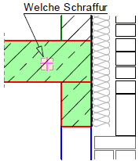
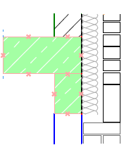
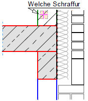
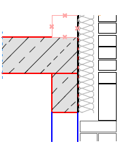

")
")
Ändern der Fläche oder der Schraffurparameter bzw. der Füllfarbe. Die ursprünglich gewählten Parameter und die Methode werden vorgeschlagen (Punkte, Linien, Fenster, Rechteck oder 1Reihe).
Die Schraffurattribute können über die Optionen im Funktionsbereich gewählt werden. » Schraffuren
|
Tipps: |
|
·Füllungen werden automatisch an eine mit [Konst1 | Dehnen] veränderte Geometrie angepasst. ·Zum Ändern der Füllfarbe können Sie auch [Konst1 | FenÄnd | StLiKr] oder [Konst1 | FenÄnd | Attrib] benutzen. |

So wird's gemacht:
§Klicken Sie eine Schraffurlinie oder eine Füllung an. [Welche Schraffur].
Das Polygon wird markiert.
§Editieren Sie die gewünschten Angaben im Funktionsbereich und bestätigen Sie mit Rechtsklick oder der Eingabetaste.
Sie können sofort eine weitere Schraffur oder Füllung anklicken und ändern.
Beispiel:
 |
 |
 |
 |
Schraffurlinie angeklickt. |
Das ursprüngliche Polygon wird markiert. |
Schraffurart und Füllung geändert. Nächste Schraffur angeklickt. |
Die ursprüngliche Fläche wird markiert. |
Siehe auch:
Zugehörige Referenzen: